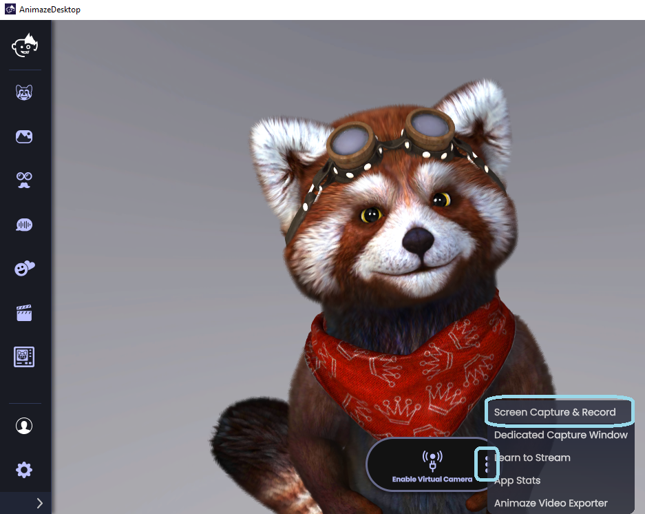
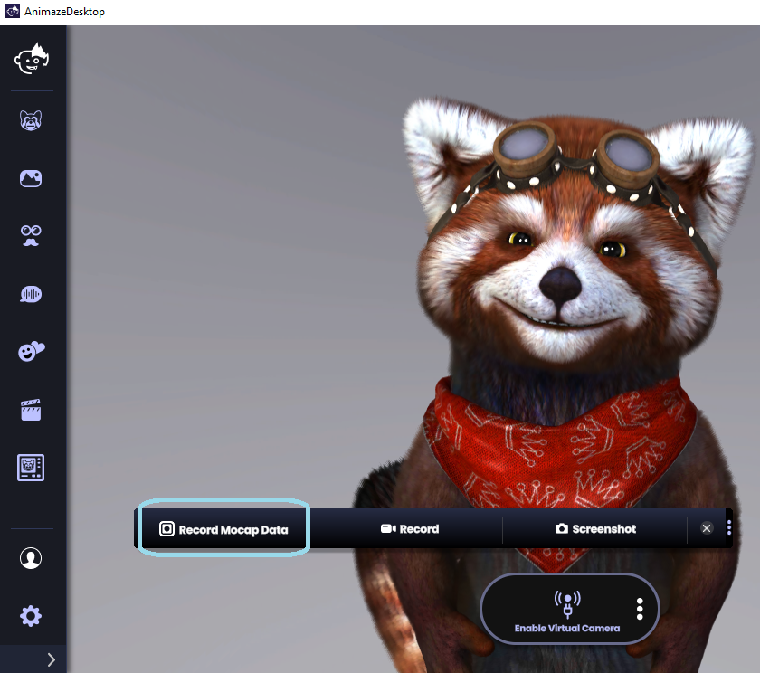
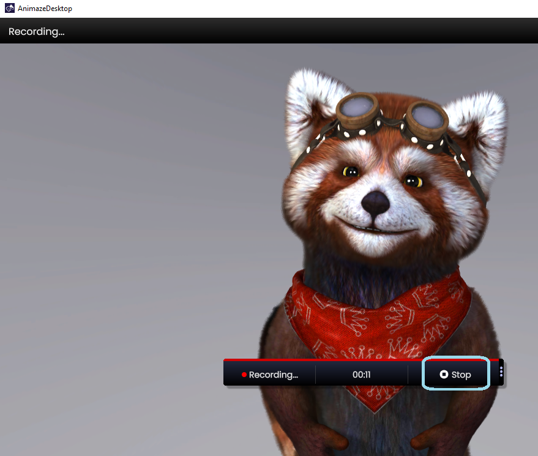
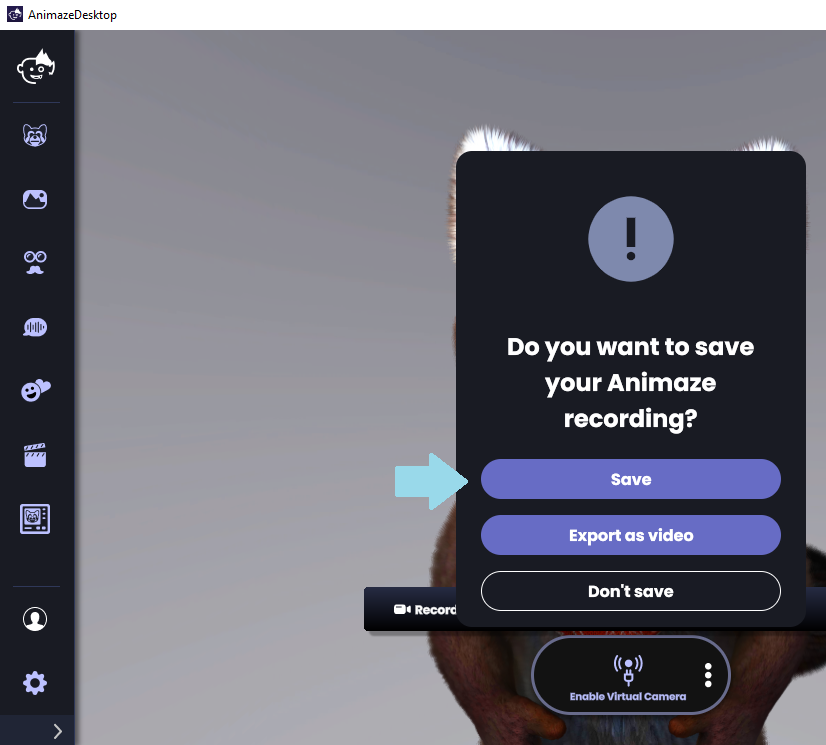
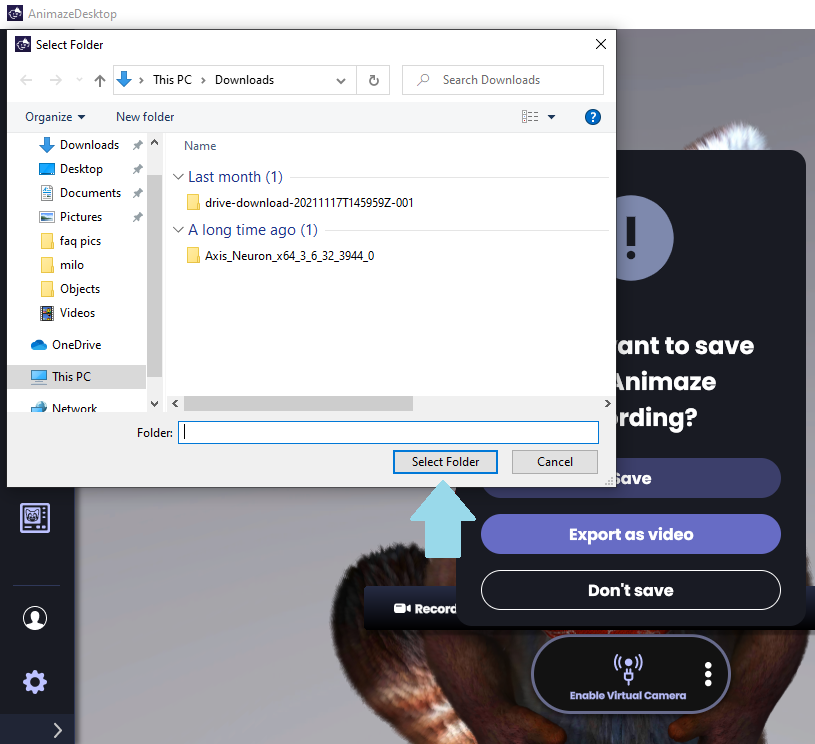
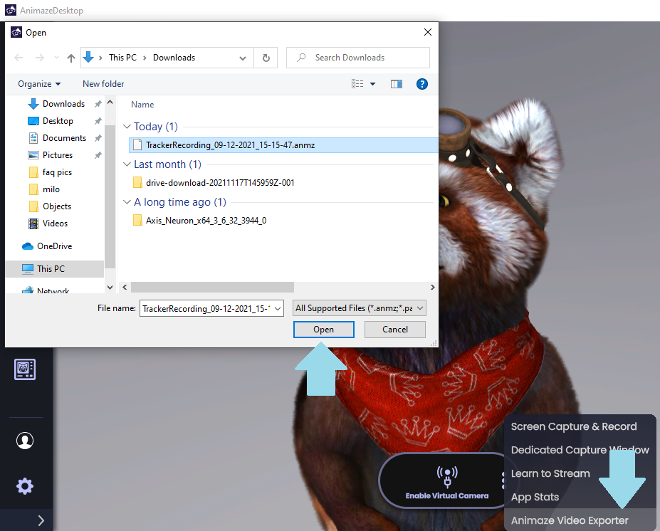
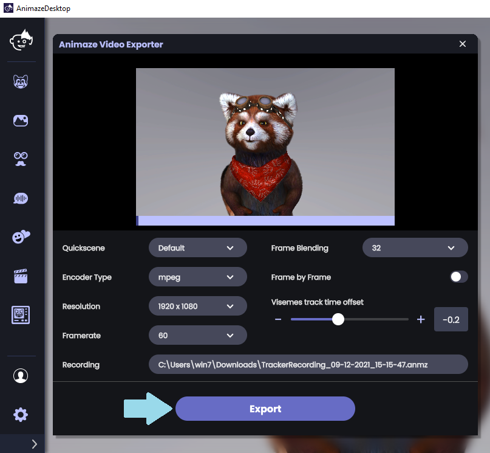
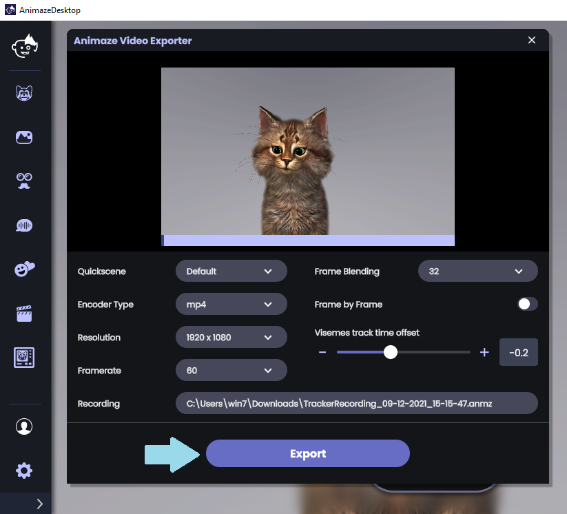

Animaze Desktop: How can I use the Animaze Video Exporter?
The Animaze Video Exporter includes a two-step process that allows you to record your avatar’s motion-capture performance in Animaze and then export it to the resolution and framerate of your choice. Here’s how you can use it to get better videos:
First of all, open the Animaze app and click the three-dot button menu next to the Enable Virtual Camera button > Click Screen Capture & Record.

Hit the Record Mocap Data selection button

Have fun recording your video and then click Stop when finished.

Click Save to save the recorded mocap data and choose where to save the file


After this has been completed, click the three-dot button menu and select the Animaze Video Exporter.
A pop-up window will appear. Browse for the saved mocap data and load it

The options in the Animaze Video Exporter are:
Quick Scene: lets you choose between your saved Quick Scenes (pre-saved avatars and backgrounds)
Encoder Type: export the video as .mpeg or .mp4 (.mp4 is available only for Plus and VIP subscribers)
Resolution: This lets you choose the resolution of your exported video
Framerate: lets you select the framerate of your exported video
Frame Blending: Frame Blending repeats frames, but it also blends between them as needed to help smooth the motion.
Frame by Frame toggle: processes the mocap data on a frame by frame basis, resulting in a smoother video. However, it takes longer for the video to be processed.
Visemes track time offset: lets you change the delay between the sound and the avatar’s mouth movement.
Set up how you want to export the mocap data as video and click Export

PRO TIP: You can change the avatar and background and use the same saved mocap data to export a new video without re-recording with a different avatar and background!
